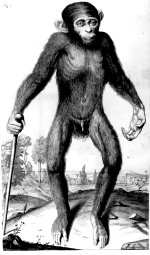

Edward Tyson, Orang-Outang, sive Homo Sylvestris: or The anatomy of a pygmie compared with that of a monkey, an ape and a man. [...] London, printed for Thomas Bennet and Daniel Brown, 1699. -- (537 C 8)
De oprichting van de Royal Society te Londen in 1662 stimuleerde en bundelde niet alleen veel Engels, maar ook buitenlands natuurwetenschappelijk onderzoek. Zo verscheen Newtons Naturalis historiae principia mathematica met de goedkeuring van de Royal Society (getekend door de bekende dagboekschrijver Samuel Pepys) en deelde Anthonie van Leeuwenhoek (zie nummer 86) de resultaten van zijn microscopische onderzoekingen mee in brieven die in de Philosophical transactions van het genootschap werden gepubliceerd.
Tysons boek over de orang oetan is een van de eerste monografieën over een dier of diersoort. Het verscheen onder de aegis van de Royal Society en was opgedragen aan haar toenmalige voorzitter. Tyson was de eerste die de directe verwantschap tussen mensapen en mensen herkende en kan zodoende als een verre voorloper van Darwin beschouwd worden. Samen met William Cowper (zie nummer 77) had Tyson ten behoeve van zijn onderzoek een chimpansee ontleed en het was tevens Cowper die de tekeningen voor de platen maakte.
Literatuur
- Claus Nissen, Die zoologische Buchillustration. Ihre Geschichte und Bibliographie. Stuttgart 1969-1978. 2 dln, I, nr. 4194, II, p. 137.
| vorige pagina | top pagina |